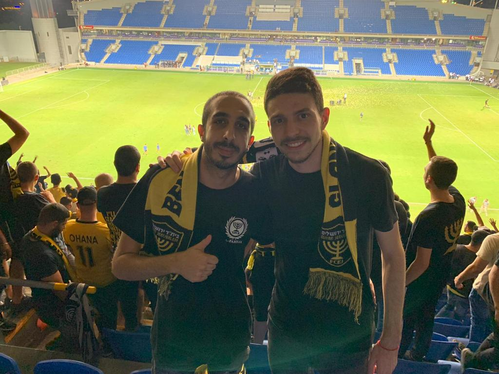

About Me
Home
News and Updates
Fans

My name is Hen Bar.
I'm 24 years old and I'm from holon.
My site about football team Beitar Jerusalem.
I have been fan of the team from a young age and go to every home and away game.
YALLA BEITAR!